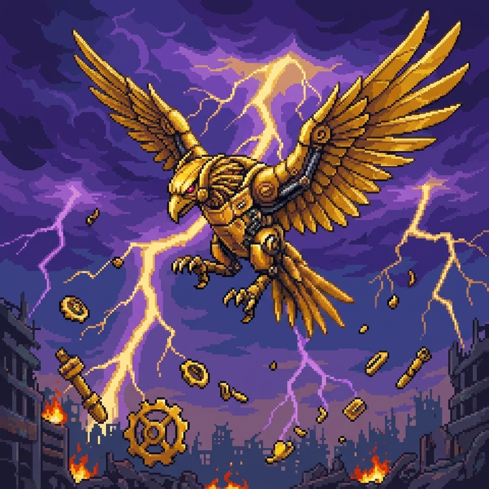

當磐石踏入新星科技城的禁忌工廠，他那原本沉穩的地脈意志，與城中沉睡的磁極合金產生了跨越時代的共鳴。磐石張開羽翼，將自身核心的高壓岩能灌注於機甲迴路中，化身為一尊撕裂戰場的黃金要塞。
他不再僅僅是移動緩慢的護盾，而是搭載了高頻脈衝引擎的破陣凶星。他能操控機甲內部生成的硬化晶石，隨心所欲地從地底召喚穿透鋼鐵的晶簇利刃。那一身閃耀著金屬光澤的羽翼背後，隱藏著無數高速旋轉的等離子齒輪，每一次揮擊都足以將現實切碎。
磐石啟動體內的脈衝引擎，將雙翼張開至極限，引導禁忌工廠下方的岩盤與磁極合金進入其機甲迴路。隨即，他在空中凝聚出無數顆被金屬外殼包裹的高密度「硬化晶石」。這些晶隕內部蘊含著不穩定的熱核能量，當磐石下達裁決命令，晶隕將帶著撕裂大氣的震鳴從天而降。這不僅是物理上的碾壓，每一顆晶隕在墜落時產生的重力波動，都足以將敵人的防禦系統強制瓦解，令其在鋼鐵與岩石的律動中歸於塵埃。
描述： 這是來自磐石之翼的左向掃蕩，在絕對的重壓軌跡中，任何抵抗皆為徒勞。當晶隕劃破長空，生者的領域將被強行重置為死寂的荒野。
視覺感： 磐石雙翼爆發出耀眼的黃金火花，隨即，數顆表面嵌有藍色離子感應燈的合金晶隕從畫面左上方呼嘯而出。以精準的斜向路徑貫穿戰場，落地時產生強烈的屏幕震動感。
描述： 當蒼穹於右側崩塌，命運的裁決已無可變更。這是鋼鐵意志對入侵者的最終驅逐，在晶隕的墜落路徑上，唯有絕望才是永恆的印記。
視覺感： 磐石發出沉悶的轟鳴，機甲身軀呈現出蓄勢待發的俯衝姿態。晶隕從畫面右上方落下，形成一道密集的斜向死線陣列，將戰場的活動空間強行壓縮，展現出足以將希望與肉體一併壓垮的威壓感。
描述： 當秩序在混沌的撞擊中消亡，毀滅便成了唯一的語言。這是來自太古深處的無序咆哮，每一顆晶隕皆在渴求著接觸，讓汝在混亂的石雨中感受靈魂的支離破碎。
視覺感： 這是此招式的最狂暴型態。磐石雙翼猛然一振，天空被厚重的像素雲層遮蔽。晶隕不再遵循任何規律，而是隨機出現在天際各處，以不同的角度與驚人的速度斜向砸向地面。
描述： 「這是來自鋼鐵要害的終極音軌。當械鳴裂空嘯劃破寂靜，生者的領域將被高頻的震盪徹底覆蓋。在此『絕響』之下，躲避已無意義。其行進路徑上的空間會產生如玻璃碎裂般的像素特效，展現出足以將一切物理防禦瞬間震碎的絕對破壞力。
視覺感： 磐石發出震撼電路的低鳴，其金屬頸部的散熱片因高溫而呈現赤紅色。隨著他猛然抬頭怒吼，一道巨大的、呈現鮮紅色半月狀且邊緣閃爍著金黃火花的音波衝擊呼嘯而出。音波刃身周圍纏繞著細小的藍色電漿電弧與震動產生的視覺殘影，帶著撕裂大氣的刺耳尖鳴感橫貫前方。
描述： 這是來自地核深處的最終告誡。當晶鋒自裂隙中湧現，大地的懷抱將成為最殘酷的葬場。，展現出足以將整台超導戰車從底部徹底貫穿的霸道衝擊力。
視覺感： 磐石將其胸口的圓形發動機核心發出高頻率的像素光震，周圍散發出暗金色的能量餘燼。隨即，戰場地面出現如蛛網般的暗紅色裂痕，隨後數個外型如利刃且中心鑲嵌著旋轉齒輪的「金晶鋒」快速向上竄出。晶體表面閃爍著高貴的金屬光澤，升起時伴隨著強烈的地面震動感與碎石飛濺特效。
描述： 「這是來自鋼鐵核心的死亡弧線。當旋轉的嘶吼聲響起，眼前的躲避不過是延緩死亡的幻覺。在此『迴旋』的死律面前，刀鋒將從汝等的背後，完成最後的判決。」
視覺感：磐石在空中維持著威嚇的展翅姿態，全身金色的機甲裝甲閃爍著耀眼的光芒，引擎噴射出強烈的金黃色高壓火花。隨即，數枚呈現暗古銅色、佈滿金屬尖刺的岩械重齒輪帶著狂暴的旋轉動能飛射而出。齒輪在空中高速自轉，它們在抵達畫面邊緣後，會以更狂野的姿態逆向迴旋飛返，展現出誓要將整個戰場徹底絞碎的極致壓迫感。